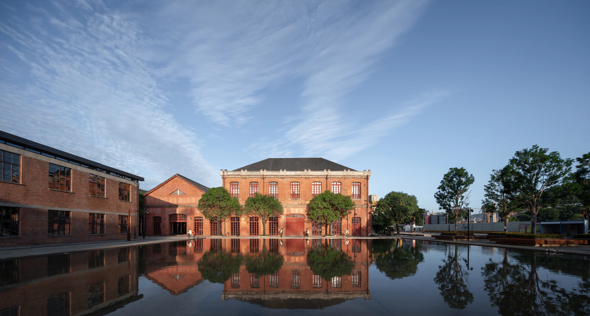

MO CHEN
Researcher, Designer & Innovator
Welcome to my design portfolio.
With a background in architecture and urban research, I work across scales, from cities and spaces to digital products and experiences. My practice brings together research, design and experimentation to connect ideas with everyday life.
View selected workSPATIAL DESIGN
 Jieyang Ancient City
Heritage conservation, water systems and a living old city framework.
Jieyang Ancient City
Heritage conservation, water systems and a living old city framework.

Mawei Shipyard A large-scale renewal framework with adaptive reuse for key historic buildings. Fuyao University
Campus planning, concept design and construction drawing development across three Sports Island buildings.
Fuyao University
Campus planning, concept design and construction drawing development across three Sports Island buildings.
 Jianguo Road 75 Renewal
Industrial heritage, public space and a digital cultural district renewal framework.
Jianguo Road 75 Renewal
Industrial heritage, public space and a digital cultural district renewal framework.
 Shou County Culture and Art Center
Courtyards, light and a continuous public route through a cultural building.
Shou County Culture and Art Center
Courtyards, light and a continuous public route through a cultural building.
 Chongqing Xinhua Bookstore
A vertical bookstore and stepped public spaces within a dense city.
Chongqing Xinhua Bookstore
A vertical bookstore and stepped public spaces within a dense city.
DESIGN PRACTICE

COMMUNITY / PUBLIC PROGRAMMES

ABOUT
An architectural foundation.
An architectural foundation.
A product design direction.
My earlier work spans urban regeneration, adaptive reuse and strategic research. These projects involved reading existing conditions, organizing complex information and developing proposals within real constraints.
Now based in Boston, I am bringing that experience into digital product design. BosGoGo is my current product case study; AI applications are an emerging direction I am exploring through independent work.
Open full profile
CONTACT
Product design / Research / AI applications
Let's work on a useful product.
Open contact pageFor product and experience design opportunities, research-led collaborations and AI application projects.
workchenmo@gmail.com